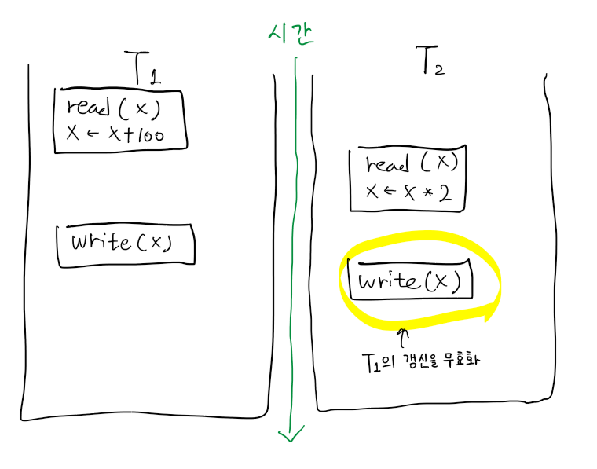
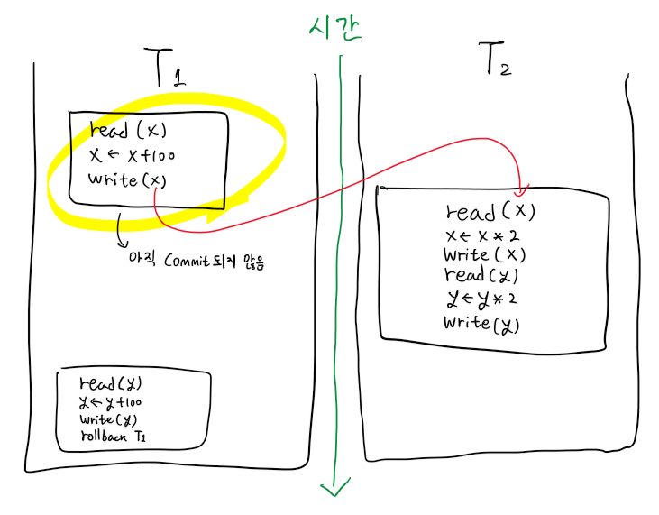
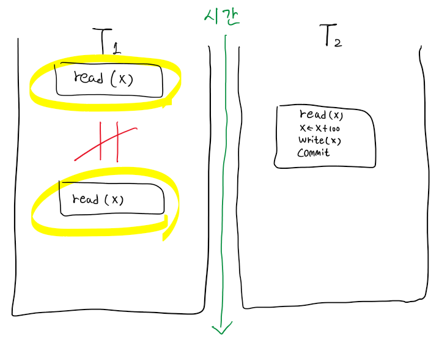
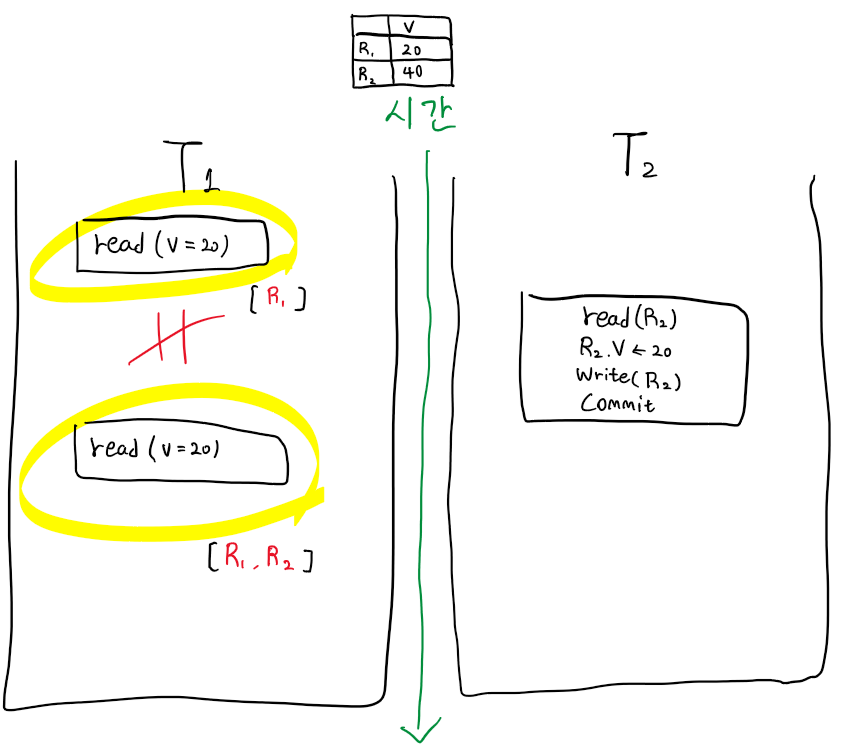
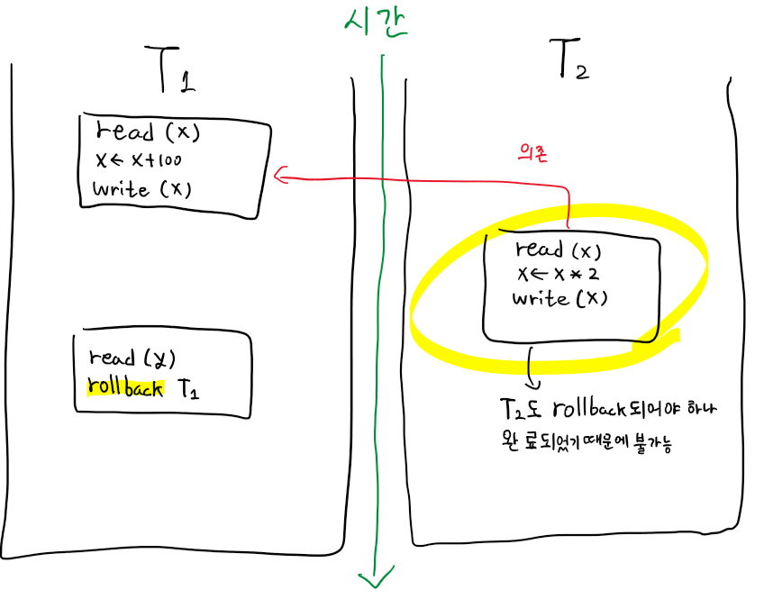
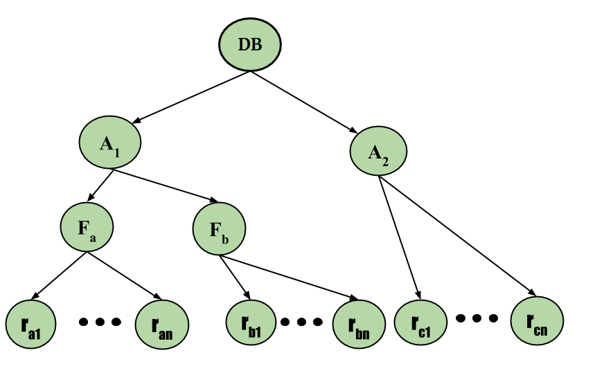

[DB] DB Locking 알아보기
서론
CS 스터디에서 2월 20일에 발표한 DB Locking에 대해 정리한 문서를 블로그에 공유하고자 한다.
DB Locking이란?
병행 트랜잭션이 가능한 환경에서, 변경중인 record를 다른 transaction들이 접근하지 못하도록 막음으로써, 병행 수행 문제를 해결하려는 접근 방법입니다.
이러한 Locking을 위한 규약(Protocol)으로는 Shared Locking Protocol, 2PLP(2-Phase Locking Protocol), Multiple Granularity Locking Protocol 이 있습니다.
병행 트랜잭션(Concurrent Transaction) 이란?
동시에 실행되고 있는 둘 이상의 트랜잭션을 의미합니다.
병행 트랜잭션의 장점
DB의 공용도(Sharability) 제고
응답시간(Response Time) 단축
시스템 활용도(System Utilization) 증대
병행 트랜잭션의 동시성 문제
병행 트랜잭션의 병행 수행률이 상승할수록, 아래와 같은 병행 문제들의 발생률도 상승합니다.
설명의 편의를 위해 병행 실행되는 트랜잭션 두 가지를 아래에서 T1, T2라고 부르도록 하겠습니다.
갱신 분실(Lost Update)

두 트랜잭션이 병렬로 같은 데이터를 읽고 갱신하는 과정에서, 한 트랜잭션이 다른 트랜잭션의 갱신 값을 덮어쓰는 문제입니다.
예시) T1이 연산 후 갱신 작업을 수행한 뒤, 이후에 T2가 갱신된 값이 아닌 이전의 값을 기준으로 연산 후 갱신 작업을 수행해 T1의 갱신이 무효화 됩니다.
모순적 읽기(Inconsistent Read)
두 트랜잭션이 병렬로 같은 데이터를 읽고 갱신하는 과정에서, 데이터 불일치가 발생하는 문제입니다.
Dirty Read

격리성 수준이 Read Uncommitted 이하인 환경에서 발생가능한 문제로, 한 트랜잭션이 다른 트랜잭션으로부터 커밋되지 않은 값을 읽어 발생하는 문제입니다.
예시) T1이 커밋되기 전, 중간에 T2가 T1에서 작업하던 데이터(T1의 수정이 반영되지 않은)을 읽고 작업을 수행해 T1 연산 이전의 값으로 T2가 수행되게 됩니다. 이는 정확하지 않거나 일관되지 않은 결과를 야기할 수 있습니다.
Non-repeatable Read

같은 데이터를 한 트랜잭션 내에서 읽었음에도, 둘의 값이 다른 문제입니다.
예시) T1이 한 데이터를 두 번 읽을 때, 중간에 T2가 해당 데이터의 값을 변경한 뒤 커밋하게 되면 두 번째로 읽었을 때의 값은 처음 읽었던 값과 다르게 됩니다.
Phantom Read

같은 조건에 대한 검색을 한 트랜잭션 내에서 수행했음에도, 다시 읽으려 할 때 이전에 존재하던 값이 없어지거나, 새로운 값이 추가로 검색되는 문제입니다.
예시) T1이 한 데이터를 두 번 읽을 때, 중간에 T2가 해당 데이터를 삭제한 뒤 커밋하게 되면 두 번째로 읽었을 때 해당 데이터는 존재하지 않게 됩니다.
연쇄적 롤백(Cascading Rollback)

한 트랜잭션이 갱신한 데이터를 다른 트랜잭션이 또 다시 갱신한 뒤, 앞선 트랜잭션을 롤백하려할 때 이후 실행했던 트랜잭션도 롤백해야 하나 이미 해당 트랜잭션은 완료되어 롤백이 불가능한 문제입니다.
예시) T1이 한 데이터를 갱신한 뒤, T2이 해당 데이터를 또 갱신한 뒤 완료처리한 상태에서 T1을 롤백하려 하면 T2이 처리한 부분에 대해서는 롤백이 불가능하게 됩니다.
Transaction Schedule이란?
트랜잭션들이 연산을 실행하는 순서를 의미합니다.
스케줄의 개수는 Interleaving(트랜잭션을 쪼개서 수행하는 것)이 가능한 경우 거의 무한대이고, 허용되지 않으면 $n!$ 개 입니다.
병행 수행상 문제가 야기되느냐 그렇지 않느냐에 따라 직렬/비직렬 스케줄로 나뉩니다.
직렬 스케줄(serial Schedule)
스케줄에 포함된 모든 트랜잭션이 하나씩 실행되는 스케줄을 의미합니다.
병행 수행의 문제가 발생하지 않으나, 병행 트랜잭션으로 실행되지 않게 됩니다.
비직렬 스케줄(non-serial Schedule)
스케줄에 포함된 모든 트랜잭션이 서로 interleaved되는 스케줄을 의미합니다.
같은 트랜잭션 내 작업이라도 쪼개서 수행될 수 있기 때문에 쪼개진 작업이 실행되는 시점에 따라 잘못된 결과를 얻을 수 있습니다.
직렬 가능 스케줄(serializable Schedule)
어떤 직렬 스케줄과 동등한 비직렬 스케줄을 의미합니다.
모든 충돌 직렬 가능 스케줄은 뷰 직렬 가능 스케줄이지만, 역은 성립하지 않습니다.
충돌 직렬 가능 스케줄
비직렬 스케줄 S에 대해 충돌 동등한 직렬 스케줄 S’가 존재하면, S를 충돌 직렬 가능 스케줄 이라고 합니다.
뷰 직렬 가능 스케줄
비직렬 스케줄 S에 대해 뷰 동등한 직렬 스케줄 S’가 존재하면, S를 뷰 직렬 가능 스케줄 이라고 합니다.
스케줄 동등
결과(result) 동등
결과가 동일한 스케줄을 의미합니다.
충돌(conflict) 동등
충돌 연산의 순서가 동일한 스케줄을 의미합니다.
뷰(view) 동등
스케줄 S1, S2에 포함된 트랜잭션이 같고 아래 조건을 만족하는 경우를 의미합니다.
- S1에서 $T_i$가 $x$의 초기 값을 읽는다면, S2에서도 그러해야 합니다.
- S1에서 $T_i$의 모든 read(x)가 $T_j$가 write한 x값을 읽는다면, S2에서도 그러해야 합니다.
- S1에서 $T_i$가 write(x)를 마지막으로 수행하면, S2에서도 그러해야 합니다.
Lock 이란?
DB상의 데이터 항목에 대한 잠금장치입니다.
Lock이 걸린 데이터 항목은 Lock을 건 트랜잭션만 접근할 수 있습니다.
Lcok은 Lock을 건 트랜잭션에 의해서만 Unlock할 수 있습니다.
Lock의 종류
공용 로크(Shared Lock, S-Lock)
다른 트랜잭션이 해당 데이터를 Read 할 수 있습니다.
전용 로크(Exclusive Lock, X-Lock)
다른 트랜잭션이 해당 데이터를 Read/Write 할 수 없습니다.
로크 단위(Lock granularity)
row, table, database 등 Locking할 자원의 크기를 말합니다.
단위의 크기가 커질수록 병행성 수준은 낮아지고, 병행 제어 기법은 간단해집니다.
로크 호환성 (Lock Compatibility)
이미 자원에 특정 Lock이 설정되어 있는 경우, 다른 트랜잭션도 해당 자원에 대해 Lock을 설정할 수 있는지 여부를 말합니다.
| 구 분 | Request S-lock | Request X-lock |
|---|---|---|
| S-locked data item | ok | not ok |
| X-locked data item | not ok | not ok |
Locking Protocol
아래 설명된 Protocol들 이외에도 기본적인 Locking Protocol은 다음과 같습니다.
- 트랜잭션 T가 x에 대해 read(x)/write(x) 연산을 하려면 먼저 lock(x) 연산을 실행해야 한다.
- 트랜잭션 T가 실행한 lock(x)에 대해서는 T가 모든 실행(Task)을 종료하기 전에 unlock(x) 연산을 수행해야 한다.
- 트랜잭션 T는 다른 트랜잭션에 의해 lock이 걸려있는 x에 대해 lock(x) 를 실행할 수 없다.
- 트랜잭션 T는 자신이 lock을 걸지않은 x에 대해 unlock(x) 을 실행할 수 없다.
Shared Locking Protocol(공용 로킹 규약)
- 트랜잭션 T는 read(x) 전 반드시 lock-S(x) 또는 lock-X(x)를 실행해야 함.
- 트랜잭션 T는 write(x) 전 반드시 lock-X(x)를 실행해야 함.
이러한 규약 때문에 공용 로킹 규약은 직렬가능성(serializability) 을 보장하지 못합니다.
직렬가능성(serializability): 비직렬 스케줄을 직렬 스케줄로 변환할 수 있는지를 의미합니다.- lock과 unlock이 병렬로 수행될 수 있으므로 병행 처리되는 트랜잭션들이 서로 간섭할 수 있어 직렬 가능성이 보장되지 않습니다.
2PLP(2-Phase Locking Protocol, 2단계 로킹 규약)
lock만 가능한 Phase와 unlock만 가능한 phase를 나누어 로킹을 수행하는 규약입니다.
직렬가능성을 보장하지만, Deadlock 문제가 존재하는 규약입니다.
변형으로는 Strict 2PLP, Rigorous 2PLP가 존재하며, 상용 DBMS에서는 이 둘 중 하나를 사용합니다.
1 단계(Growing Phase)
- 트랜잭션은 계속해 lock을 획득할 수 있으나, unlock 연산은 실행할 수 없습니다.
2 단계(Shrink Phase)
- unlock 연산만 실행할 수 있으며, 일단 Lock을 해제하면 더 이상 lock을 획득할 수 없습니다.
Strict 2PLP(엄격 2단계 로킹 규약)
- 2PLP에 ‘모든 X-lock은 트랜잭션 완료시까지 unlock 할 수 없다‘는 규칙이 추가된 형태입니다.
- 구현이 어려우나 성능이 높고,
연쇄 복귀 문제(Cascading Rollback)가 발생하지 않습니다.
Rigorous 2PLP(엄밀 2단계 로킹 규약)
- 2PLP에 ‘모든 lock은 트랜잭션 완료시까지 unlock 할 수 없다‘는 규칙이 추가된 형태입니다.
- 구현은 쉬우나 성능이 낮다는 단점이 있습니다.
Multiple Granularity Locking Protocol(다중 단위 로킹 규약)
병행성 수준을 감소시키지 않기 위해, 필요 이상의 크기로 locking 하지 않는 방법입니다.
-
로킹 계층 트리 : DB -> 구역(Area) -> 파일(File) -> 레코드(Record) 
-
DB: 모든 파일을 포함하는 데이터베이스입니다. 데이터베이스는 여러 파일로 구성됩니다.
-
구역(Area): 파일들로 이뤄진 데이터베이스 내 특정 영역입니다.
-
파일(File): 관련된 레코드들의 그룹입니다.
-
레코드(Record): DB 테이블에서 하나의 행입니다. 레코드는 여러 필드로 구성됩니다.
Optimistic Lock/Pessimistic Lock란?
낙관적 로크(Optimistic Lock)
다른 트랜잭션과 충돌하지 않는다고 가정하고, 별도의 Locking 없이 자원에 접근하는 것을 말합니다.
병행 제어를 위해 아래 세 과정을 수행하며, 각 과정마다 Start(T), Validation(T), Finish(T) 세 가지의 타임스탬프 를 사용합니다.
타임스탬프: 시스템에서 트랜잭션을 유일하게 식별하기 위해 부여한 식별자(identifier) 로, 트랜잭션이 시스템에 들어온 순서대로 부여합니다.
과정
판독 단계(Read Step): 트랜잭션에 필요한 자료를 DB로 부터 읽어 Local Working Area에 복사합니다. 이후 모든 갱신은 사본을 대상으로 수행합니다.확인 단계(Validation Step): 직렬(Serialization) 가능성 위반 여부를 검사합니다.기록 단계(Write Step): 확인 단계를 통과하면 DB에 반영하고, 통과하지 못했다면 실행 결과는 취소하고 트랜잭션은 복귀합니다.
비관적 로크(Pessimistic Lock)
다른 트랜잭션과 충돌한다고 가정하고, 트랜잭션을 처리하기 전에 자원에 대해 Locking을 시도하는것을 말합니다.
과정
- 자원에 대해 Lock을 겁니다.
- 트랜잭션을 실행합니다.
- 자원에 대해 Unlock을 수행합니다.
트랜잭션이 비정상 종료된 경우 Lock을 해제할 해결책이 있는가? 없다면 직접 해결 가능한가?
잘 설계된 DBMS에서는 Lock이 오랫동안 유지되어 Deadlock과 같은 상황을 발생시키지 않도록 여러 대비책을 갖고 있으며, 대부분의 DBMS에서는 Lock 관리를 위한 기능을 제공합니다.
Lock Timeout
Lock을 걸 때, 타임아웃을 설정해 일정시간이 지나면 자동으로 Lock을 해제하도록 합니다.
Deadlock Detection
교착상태가 발생하면 사후에 트랜잭션들 중 하나를 강제종료(rollback) 시키는 조치를 취하는 방식입니다.
일반적인 회복 방법
이외에도 Redo, Undo와 같은 회복 방법을 통해 트랜잭션으로 손상된 부분을 회복시킬 수 있습니다.
Redo (Media Recovery)
비소멸장치(디스크, 테이프 등)의 내용 손상에 대한 회복 기법입니다.
가장 최근의 복제본(dump)을 적재시키고, 해당 복제본 이후의 변경을 log를 이용해 재실행하여 DB를 복원합니다.
Undo
log를 이용해 모든 변경을 취소시키므로써 DB를 복원합니다.
소멸 장치의 정보 회복
Log 이용 회복
트랜잭션이 Write 연산을 실행하거나, 트랜잭션의 시작/완료/철회와 같은 특별 활동시 기록되는 Log를 활용해 회복하는 방법입니다.
Log는 On-line log(실행중인 트랜잭션에 대한 로그), Archival log(누적되는 로그를 안정 저장장치에 저장한 것)로 나뉩니다.
지연 갱신(Deferred Update)의 회복
트랜잭션이 부분 완료될 때 까지 DB 변경내역을 log에 전부 기록한 뒤, 부분 완료되면 보류시킨 Output 연산을 log를 사용해 처리합니다.
트랜잭션 실행 중 장애가 발생했다면 처음부터 다시 실행하고, 완료 후 장애가 발생했다면 Log을 사용해 트랜잭션을 Redo 합니다.
즉시 갱신(Immediate Update)의 회복
트랜잭션이 실행되는 동안 발생한 변경 내용을 DB에 그대로 반영해 처리합니다.
트랜잭션 실행 중 장애가 발생했다면 해당 트랜잭션에 대한 Undo를 실행하고, 완료 후 장애가 발생했다면 트랜잭션을 Redo 합니다.
검사시점(Check Point) 회복
Log를 이용할 경우 Redo/Undo 대상 트랜잭션을 찾기위해 log 전체를 조사하거나,불필요한 Redo를 반복한다는 문제를 해결하기 위해 일정 간격으로 CheckPoint를 설치해 이를 사용하는 기법입니다.
Log를 차례로 검사하며 트랜잭션의 start를 만났다면 해당 트랜잭션을 Undo-list에, 트랜잭션의 commit을 만났다면 Undo-list에서 삭제하고 Redo-list에 추가합니다. 이후 Undo-list의 트랜잭션을 log에 기록된 역순으로 Undo를, Redo-list의 트랜잭션을 log에 기록된 순서로 Redo를 수행합니다.
그림자 페이징(Shadow Paging) 기법
트랜잭션을 실행하는 동안 2개의 page table을 유지하는 방법입니다.
current page table은 write 연산을 실행할 때 변경하며, shadow page table은 트랜잭션 실행 직전의 상태를 유지합니다.
트랜잭션 완료 전 장애가 발생한 경우 shadow page table을 복사해 실행 직전으로 복귀시킵니다.
참고 자료
- 전공과목 강의자료
- Isolation (database systems) - Wikipedia
- Dirty Read in SQL - GeeksforGeeks
- Concurrency problems in DBMS Transactions - GeeksforGeeks
- 동시성제어개요 - 지식덤프
- Serializability in DBMS - GeeksforGeeks
- Chapter 5. Locking - Hibernate Community Documentation
- Lock Based Concurrency Control Protocol in DBMS - GeeksforGeeks
- Optimistic locking - IBM Documentation
- How Optimistic Locks Work - SAP Documentation
- Reference: Physical Locks (Magic xpa 3.x) - Salesforce
- Multiple Granularity Locking in DBMS - GeeksforGeeks
- MySQL :: MySQL 8.0 Reference Manual :: 17.7.1 InnoDB Locking
- 6 Database Management - University of Missouri–St. Louis